Drop & Play
- Drag any folder to play instantly
- FLAC, MP3, ALAC, WAV, DSD, Opus & CUE
- Gapless album playback out of the box
Native Rust Music Player · macOS · Windows · Linux
Simple enough to launch in Compact Mode and press play. Deep enough for Bit-Perfect DACs, native DSD, 64-bit DSP, 88-key piano study, and collector libraries. 100% free, native Rust (~8.5 MB), zero cloud.
1 Download Ready Installers (v1.12.0)
macOS .dmg · Windows setup.exe · Linux .deb · All releases ↗
2 Or Build from Source (Rust 1.95+)
git clone https://github.com/tuxie80/txplayer && cd txplayer && cargo run --release
3 Built-In Help & Quick Start
Press F1 inside TxPlayer anytime — or browse the online manual ↗.
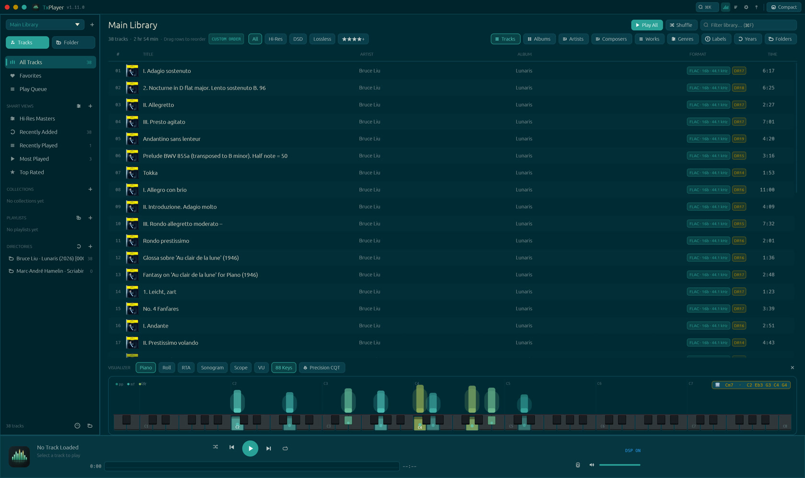
Start simple
⌘⇧M)⌘K Command PaletteReal v1.12.0 screenshots
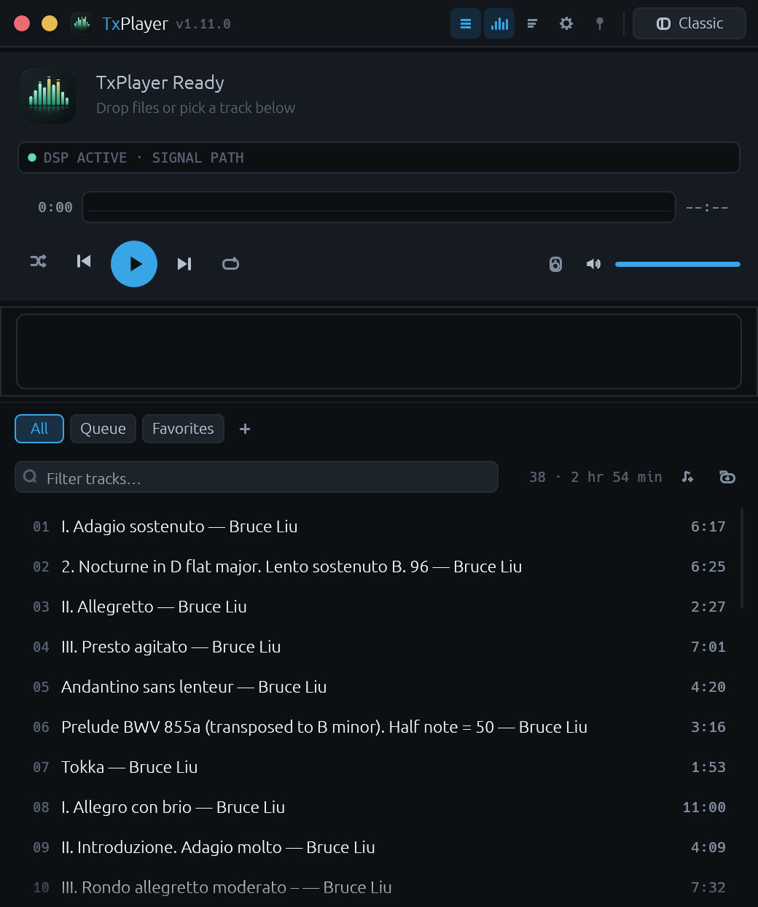


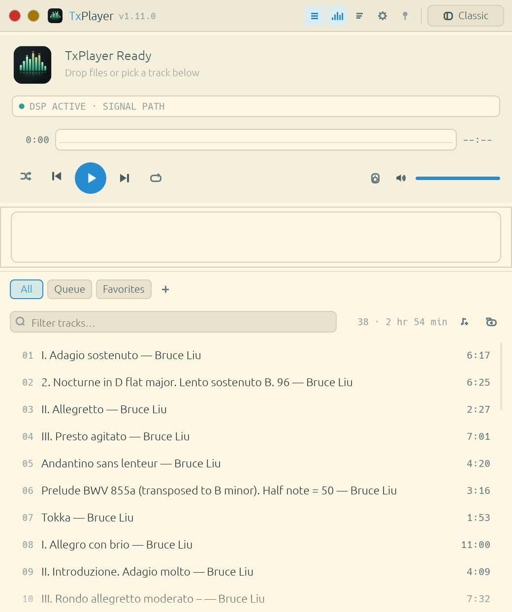
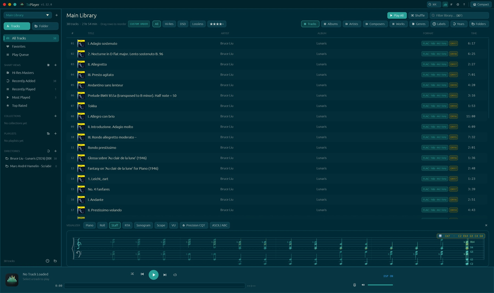
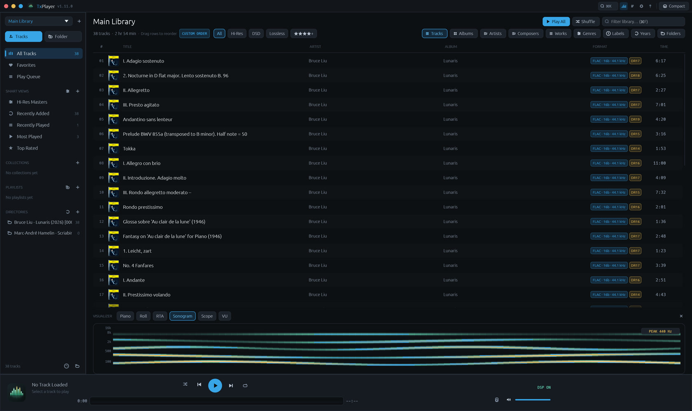

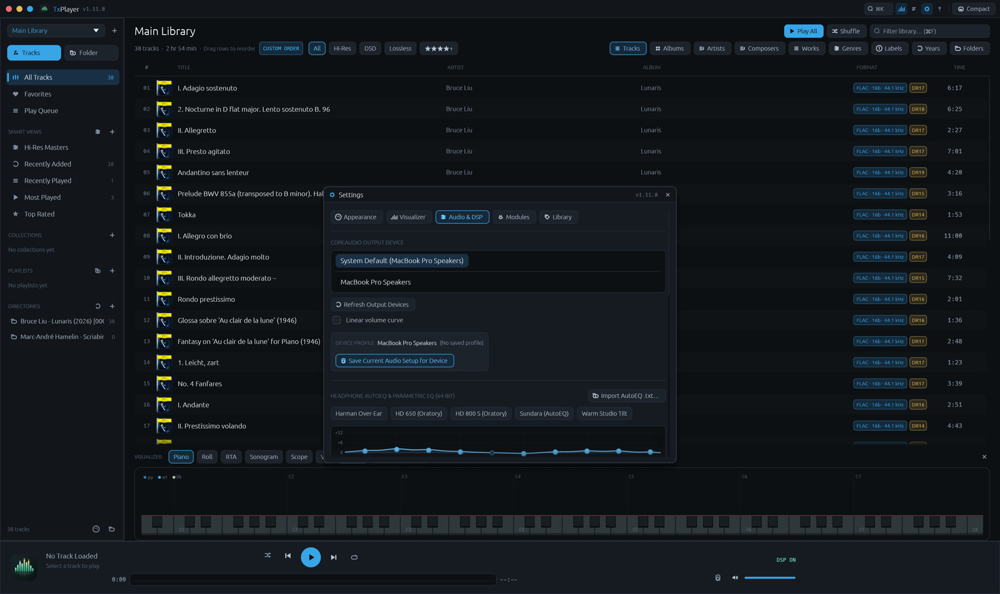
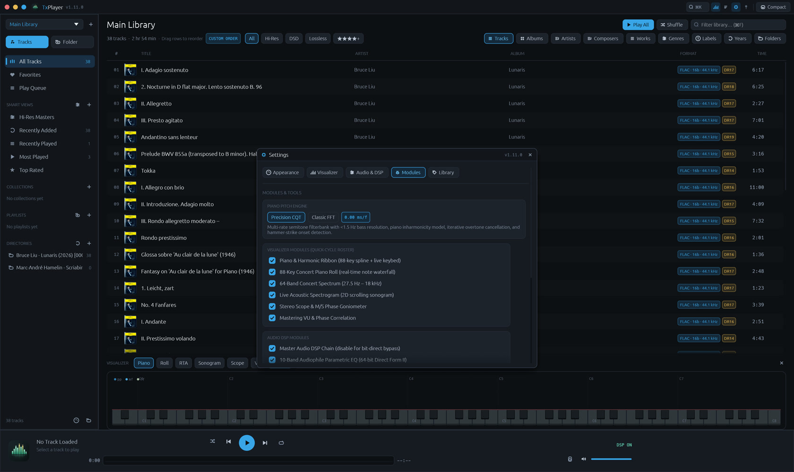

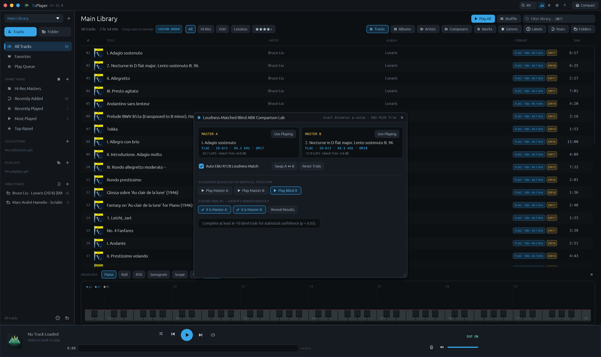
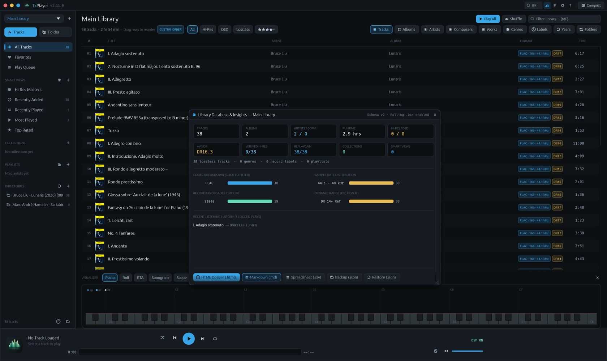


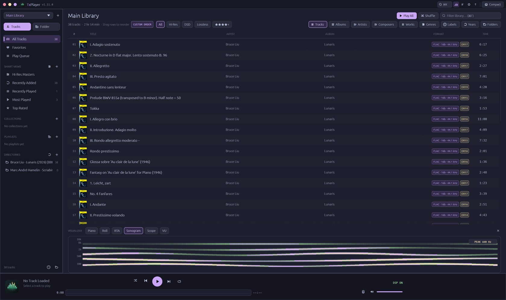
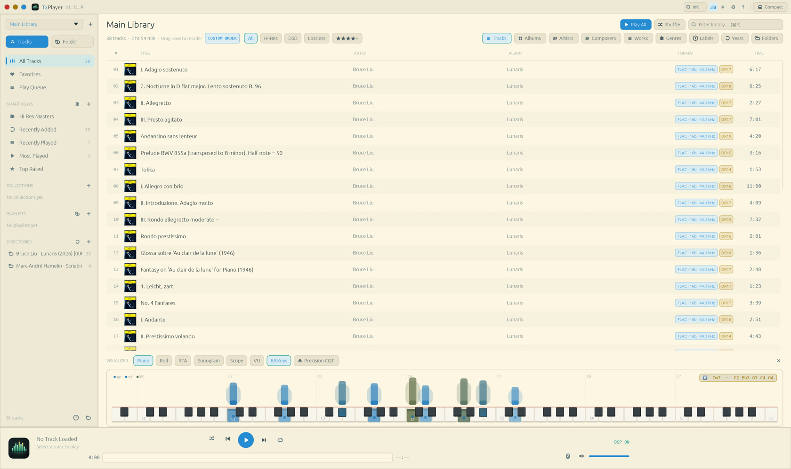
From basics to audiophile finesses
.iso.wav IR)A=440/432/415DR pills[/]), Bookmarks & Sleep TimerD DSP A/B, ⌘K Palette & F1 Quick Guide0.0 dBFS unity volume + Play-from-RAM pre-buffering0x05/0xFA I32 frames (DSD64/128) + 64-bit FIR fallback.dsf, .dff + multi-track Scarlet Book .iso direct DSD64 playback.wv), Monkey's Audio (.ape), Opus, UTF-8/CP1250 CUE2×/4×/Max oversampling20 Hz–20 kHz curve; double-click resets.txt headphone curves16,384 taps) + custom .wav IRsD anytime for zero-click Active ↔ Bypass testing0.75×–1.5×±12 st transpose + A=440 / 432 / 415 Hz concert pitch1× / ÷4 / ÷16) + Railsback stretch tuning96 × 64 scrolling 2D sonogram + live PEAK Hz badgeV for stage, 1–7 for modes; live ms/frame telemetry#tags & Liner Notescomposer:beethoven dr>=12 rate>=96 codec:flac #reference.pdf Booklet launcher & Scans Galleryffmpeg -c copy.html), Markdown (.md), CSV & JSON BackupDR pills0.1 dB) + exact binomial p-valueBEST master cleaner + 100% local Similar RadioDownload · v1.12.0 Release
Signed TxPlayer.app drag-to-Applications DMG · CoreAudio Exclusive & DoP.
Standard Windows installer (Start Menu + uninstaller) · WASAPI Exclusive.
Debian/Ubuntu .deb + universal tarball with install.sh · ALSA / PipeWire.
cargo test && cargo run --release
Rust 1.95+ · 57/57 unit tests · zero Electron.
Includes verified SHA256SUMS.txt & MIT open-source license.
Shortcuts, Power-Search tokens, DAC setup, Grand Staff & DSP guide.